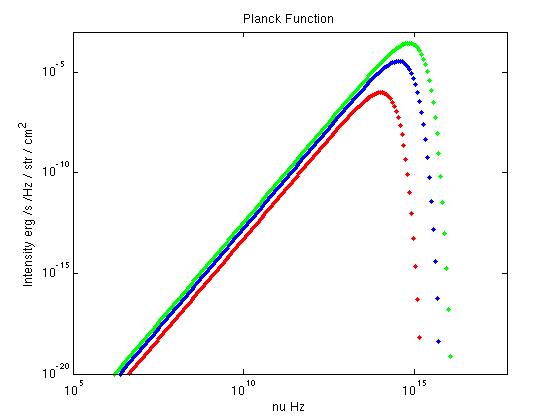
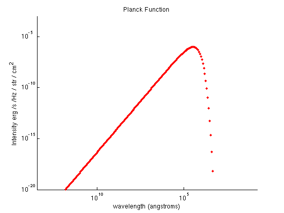
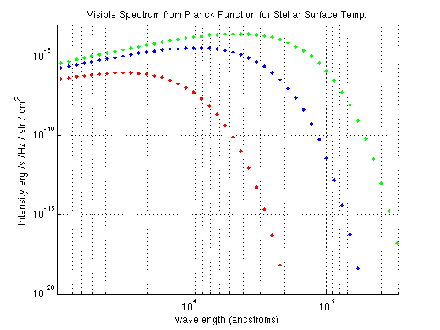
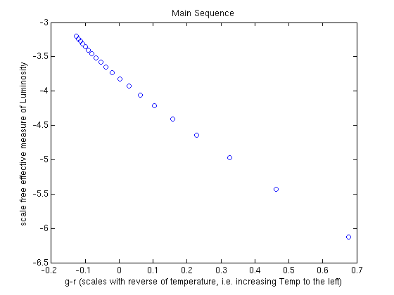

Black Body Spectrum and the HR Diagram
Here the student works through plotting the Planck Function (in log-log space), writes a function definition file, and uses this to make qualitative estimates of how two color magnitudes vary with temperature, thereby creating a 'theoretical' HR diagram to be compared to HR diagrams from data in the Cluster HR Diagrams lab.
Contents
The Planck Function
First the student changes plotExample.m to a file which will, basically, contain what is shown in this file (i.e. the student works through the lab in a script). The student also changes the function in functionExample.m to the Planck function and makes changes to names as appropriate.
% See planck.m for the planck function definition. % Now we plot the planck function using planck.m % The file at % http://www.astro.umd.edu/~mavara/matlab/Blackbody2,%205-2-10.html % provides examples of plotting the planck function in lin-lin space. % Because we will plot the planck function over many orders of magnitude we % introduce the logspace function: nuMIN = 1e-5; nuMAX = 5e17; nu = logspace(log10(nuMIN),log10(nuMAX),400); %This produced an array of % 400 elements distributed uniformly in log_10 % space T = 5.7e3; % Kelvin x = nu; y1 = planck(nu,T); figure(1); clf loglog(x, y1, '.') % loglog() plots the data on a grid log spaced in x and y xlabel('nu Hz'); ylabel('Intensity erg /s /Hz / str / cm^2') title('Planck Function') axislimits = [1e5 5e17 1e-20 1e-3] axis(axislimits) % Now, how does it look when we change the temperature? For a doubling of % temperature: hold on y2 = planck(nu,T*2.0); loglog(x,y2,'.g') % and if we decrease temp. by a factor of .3: y3 = planck(nu,T*0.3); loglog(x,y3,'.r') hold off % With a simple conversion of frequency to wavelength (in angstroms) we can % replot our graph in an easier way to interpret in the context of optical % observations (for temp = 0.3*T): c = 2.998e10; % cm/s wavelength = c./nu / 1e-8; figure(2); clf set(axes, 'XScale', 'log','YScale', 'log', 'XDir', 'reverse', 'XLim', [c/5e17/1e-8 c/1e5/1e-8], 'YLIm', [1e-20 1e-3]) hold on loglog(wavelength,y3,'.r') xlabel('wavelength (angstroms)'); ylabel('Intensity erg /s /Hz / str / cm^2') title('Planck Function') % Here we have wavelength on the x axis. Temperature T is the effective % Black Body temperature of the Sun, a star on the main sequence, and if we % plot the BB curve for this temperature and focus, using our Xlim values, % on the peak, we can see how the Sun approximately irradiates in the % visible light band (~3900 - 7500 Angstroms): figure(3); clf set(axes, 'XScale', 'log','YScale', 'log', 'XDir', 'reverse', 'XLim', [300 90000], 'YLIm', [1e-20 1e-3]) hold on loglog(wavelength,y1,'.') grid on loglog(wavelength,y2,'.g') loglog(wavelength,y3,'.r') xlabel('wavelength (angstroms)'); ylabel('Intensity erg /s /Hz / str / cm^2') title('Visible Spectrum from Planck Function for Stellar Surface Temp.')
axislimits =
1.0e+17 *
0.0000 5.0000 0.0000 0.0000
   HR Diagram
Consider the last plot. One can easily see how the spectral flux changes as a function of temperature in a given band (i.e. filter band-pass) of the visible spectrum. We can now, using planck(), plot a theoretical HR diagram for the main sequence, over which the flux (resulting in the visible magnitude) from a star changes more significantly according to Temp. than radius.
% Consider two SDSS filters, the green (4770 Angstroms) and the red (6231 % Angstroms). We will not multiply by a wavelength band width, so our units % will be incorrect, but the qualitative behavior of the plot will remain. % Let us consider 'magnitude' (wrong units, right scaling) of g vs. g-r for % 20 values of temperature in the range typical of main sequence stars, % 3000 to 18000 K. temp = linspace(3000, 18000, 20) nu_g = c / 4.77e-5; % frequency of green band nu_r = c / 6.231e-5; % frequency of red band g = planck(nu_g,temp); r = planck(nu_r,temp); gminusr = -log10(g./r); % the -log10 changes us from flux to magnitude % The value r scales roughly as the luminosity, and gminusr can be interpreted % as the color, which scales roughly like the inverse of temperature (ratio of fluxes as % function of temperature scales positively with temp.). Note that if g and r were stellar apparent % magnitudes, then their difference would scale as the negative of the log % of the ratio of the fluxes. % Now we plot our theoretical HR diagram: figure(4); clf plot(gminusr,log10(r),'o') % take the log of r~flux to get scaling as magnitude hold on xlabel('g-r (scales with reverse of temperature, i.e. increasing Temp to the left)'); ylabel('scale free effective measure of Luminosity') title('Main Sequence') % While we don't expect this to look exactly like an HR diagram, at the % very least because it's missing non-main sequence behavior of stars, % there is clearly a linear trend, qualitatively equivalent to the main % sequence block on HR diagrams.
temp =
1.0e+04 *
Columns 1 through 7
0.3000 0.3789 0.4579 0.5368 0.6158 0.6947 0.7737
Columns 8 through 14
0.8526 0.9316 1.0105 1.0895 1.1684 1.2474 1.3263
Columns 15 through 20
1.4053 1.4842 1.5632 1.6421 1.7211 1.8000
